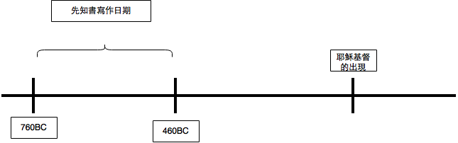

Chap-10: The Prophets: Enforcing the Covenant in Israel
米琰 - July 26,2015
提纲
- 关于“先知”
- 关于那些可以帮助你更好的读懂先知书的东西
- 关于应用
1. 先知书中，"先知"的意思是什么？
-預言或預示將要發生的事。
-舊約的預言之中,關於彌賽亞的預言,少於百分之二。 明確地描述新約時代的預言,少於百分之五。 關於未來事件的預言,少於百分之一。
對預言這個詞的錯誤理解：
先知確實曾經宣告未來的事。但他們所宣告的通常是以色 列、猶大、及其周圍的國家不久的未來,而不是我們的未來。 因此,瞭解先知書的關鍵之一就是:我們想看先知預言的應 驗,就必須回顧對他們而言仍屬未來,但對我們而言已經過去 的時代。
2. 具体一点！先知的角色和职责是什么？
先知是执行约的中保
神：颁布和执行律法。律法构成神与他的子民所立的约。
先知：向人民宣布神执行律法，复述神的話 ⇒ 使子民对于蒙祝福或受咒詛有清楚的了解
-預言或預示將要發生的事。
-舊約的預言之中,關於彌賽亞的預言,少於百分之二。 明確地描述新約時代的預言,少於百分之五。 關於未來事件的預言,少於百分之一。
對預言這個詞的錯誤理解：
先知確實曾經宣告未來的事。但他們所宣告的通常是以色 列、猶大、及其周圍的國家不久的未來,而不是我們的未來。 因此,瞭解先知書的關鍵之一就是:我們想看先知預言的應 驗,就必須回顧對他們而言仍屬未來,但對我們而言已經過去 的時代。
3. 神的话！！！！！！
神興起先知，先知回應神的呼召（因此如果有人把先知的職分攬到自己身上，我們就有很好的理由將它視為假先知
先知們在傳達神諭峙,常以「耶和華如此說」或「耶和華說」這類提醒的話作為開始、結束、或穿插在神諭之間。 事實上,大部分的時候先知的信息係用第一人稱來傳達,以表明是直接來自耶和華,以致神提到祂自己時,自稱「我」。
我們在先知書中所讀到的,不只是先知所知道的神的話,而是神要先知傳達的神的話。先知並不獨自行動或發言。
耶利米书第27~28章中反复出现:
- 「耶和华对我如此说……」(27:2)
- 「传话给……」 (27:3)
- 「嘱咐他們传给……」(27:4)
- 「耶和华说的」(27:11)
可以看出，先知耶利米的話就是神的話。他傳達這些話是憑著神的權柄(28:15，16),而不是他自己的權柄。
4. 神的信息！！！不变的信息！！！
神借着先知所传达的警告或应许，与神借着摩西所传达的信息相同，不过信息的形式可能不大相同。
我们在先知书中所读到的,不只是先知所知道的神的話,而是神要先知传达的神的話。先知並不独自行动或发言。
例如,就在何西阿書4:2的前半節:「只有咒詛、欺騙、謀殺、偷盜、和姦淫。」
這5個詞和十戒中的5個一一對應
- 咒詛 ↔ 第三條誡命:「不可妄稱耶和華的名……」(出20:7)
- 欺騙 ↔ 第九條誡命:「不可作假見證……」(出20:16)
- 謀殺 ↔ 第六條誠命:「不可殺人」(出20:13)
- 偷盜 ↔ 第八條誡命:「不可偷盜」(出20:15)
- 姦淫 ↔ 第七條誡命:「不可姦淫」(出20:14)
5.遵守律法或者不遵守律法的后果是什么？
守约则有:
生命、健康、富足、农产丰收、尊敬、安全。
大多数的具体褔分,都可列入这六大类之中的一种。
不守约则有:
死亡、疾病、干旱、缺乏、危险、毁灭、失败、放逐、穷困、耻辱。大多数的咒诅都可归入这几类中的一种。
利未記26 : 3 ~ 9
3「你们若遵行我的律例，谨守我的诫命， 4我就给你们降下时雨， 叫地生出土产，田野的树木结果子。 5你们打粮食要打到摘葡萄的时候，摘葡萄要摘到撒种的时候；并且要吃得 饱足，在你们的地上安然居住。 6我要赐平安在你们的 地上；你们躺卧，无人惊吓。我要叫恶兽从你们的地上息灭；刀剑也必不经过你们的地。 7你们要追赶仇敌，他们必倒在你们刀下。 8你们五个人要追赶 一百人，一百人要追赶一万人；仇敌必倒在你们刀下。 9我要眷顾你们，使你们生养众多，也要与你们坚定所立的约。
利未記26 : 14 ~ 25
14「你们若不听从我，不遵行我的诫命， 15厌弃我的律例，厌恶我的典章，不遵行我一切的诫命，背弃我的约， 16我待你们就要这样：我必命定 惊惶，叫眼目干瘪、精神消耗的痨病热病辖制你们。你们也要白白地撒种，因为仇敌要 吃你们所种的。 17我要向你们变脸，你们就要败在仇敌面前。恨恶你们的，必辖管你们；无人追赶，你们却要逃跑。 18你们因这些事若还不听从我，我就要为你们的罪加七倍惩罚你们。 19我必断绝你们因势力而有的骄傲，又要使覆 你们的天如铁，载你们的地如铜。 20你们要白白地劳力；因为你们的地不出土产，其上的树木也不结果子。21「你们 行事若与我反对，不肯听从我，我就要按你们的罪加七倍降灾与你们。 22我也要打发野地的走兽到你们中间，抢吃你们的儿 女，吞灭你们的牲畜，使你们的人数减少，道路荒凉。23「你们因这些事若仍不改正归我，行事与我反对， 24我就要行事与你们反对，因你们的 罪击打你们七次。 25我又要使刀剑临到你们，报复你们背约的仇；聚集你们在各城内，降瘟疫 在你们中间，也必将你们交在仇敌的手中。
 先知书经文的最常见模式：
先知书经文的最常见模式：
- 先知宣告以色列的罪；或神对她的爱；
- 先知预言以色列人要承受的咒诅或褔分
这些我都学会了，现在我就可以自己读懂先知书了吗？
圣经詞典
提供论述关于每一卷书的历史背景、基本大纲、特点、读者必须知道的解释问题的文章。
优点：背景介绍详细
缺点：详细经文字句的介绍不详细
注释书📕
对每一卷书有长篇的介绍,其风格与圣经词典有些相似,但更重要的是,注释书解释个别经文的意思。
优点：单独经文的解释很详细
缺点：经常比较没有组织
圣经手册
最好的圣经手册将圣经词典和注释书的特点结合起來,不过在解释资料或逐节说明方面会不如那两种书。
优点：结合圣经词典和注释书的特色
缺点：在解释资料或逐节说明方面则不太详细
方法2：把单独的神谕从整体中分别出来
在實際研究或用解經的方法研讀先知書時,我們必須學習的第一件事就是思想单独的神諭(正如我們研讀新約書信時必須 學習整段地思想一樣)。
難點：
大部分時候先知所說的,是以連續不斷的方式呈現在他們的著作之中。也就是說,他們在許多年的事奉裡,在不同的時 間和地點所說的話,被收集記錄在一起,卻沒有任何的分段以顯示一個神諭在那裡結束,而另一個神諭在那裡開始。
例如：阿摩司書5章
1 以色列家啊，要听我为你们所作的哀歌：2 以色列民跌倒，不得再起；躺在地上，无人搀扶。3主耶和华如此说：以色列家的城发出一千兵的， 只剩一百；发出一百的，只剩十个。 4耶和华向以色列家如此说：你们要寻求我，就必存活。5不要往伯特利寻求，不要进入吉甲，不要过到别是巴； 因为吉甲必被掳掠，伯特利也必归于无有。6要寻求耶和华，就必存活，免得他在约瑟家像火发出，在伯特利焚烧，无人扑灭。7你们这使公平变为茵陈、 将公义丢弃于地的，8要寻求那造昴星和参星，使死荫变为晨光，使白日变为黑夜，命海水来浇在地上的—耶和华是他的名；9他使力强的忽遭灭亡， 以致保障遭遇毁坏。10你们怨恨那在城门口责备人的，憎恶那说正直话的。11你们践踏贫民，向他们勒索麦子；你们用凿过的石头建造房屋，却不得 住在其内；栽种美好的葡萄园，却不得喝所出的酒。12我知道你们的罪过何等多，你们的罪恶何等大。你们苦待义人，收受贿赂，在城门口屈枉穷乏人。 13所以通达人见这样的时势必静默不言，因为时势真恶。14你们要求善，不要求恶，就必存活。这样，耶和华—万军之上帝必照你们所说的与你们同在。 15要恶恶好善，在城门口秉公行义；或者耶和华—万军之上帝向约瑟的余民施恩。16主耶和华—万军之上帝如此说：在一切宽阔处必有哀号的声音；在各 街市上必有人说：哀哉！哀哉！又必叫农夫来哭号，叫善唱哀歌的来举哀。17在各葡萄园必有哀号的声音，因为我必从你中间经过。这是耶和华说的。 18想 望耶和华日子来到的有祸了！你们为何想望耶和华的日子呢？那日黑暗没有光明，19景况好像人躲避狮子又遇见熊，或是进房屋以手靠墙，就被蛇咬。 20耶和华的日子不是黑暗没有光明吗？不是幽暗毫无光辉吗？21我厌恶你们的节期，也不喜悦你们的严肃会。22你们虽然向我献燔祭和素祭，我却不悦纳， 也不顾你们用肥畜献的平安祭；23要使你们歌唱的声音远离我，因为我不听你们弹琴的响声。24惟愿公平如大水滚滚，使公义如江河滔滔。25「以色列家啊， 你们在旷野四十年，岂是将祭物和供物献给我呢？ 26你们抬着为自己所造之摩洛的帐幕和偶像的龛，并你们的神星。 27所以我要把你们掳到大马士革以外。 」这是耶和华、名为万军之上帝说的。
結論
因此,每一次主題稍有改變並不表示一個新的神諭之開始。另一方面,章的劃分也與個別的神諭不符。神諭的區分應根據已知的形式。
方法3：认识先知书中的各种神谕的形式
正如聖經是由許多不同種類的文學和文學形式所組成的,先知也採用各種的文學形式來傳達受神啟示的信息。註釋書會辨別和解釋這些形式。
形式一. 訴訟 (以賽亞書3 : 13 ~ 26)
13耶和华起来辩论，站着审判众民。14耶和华必审问他民中的长老和首领，说：吃尽葡萄园果子的就是你们；向贫穷人所夺的都在你们家中。15主— 万军之耶和华说：你们为何压制我的百姓，搓磨贫穷人的脸呢？对耶路撒冷女子的警告16耶和华又说：因为锡安的女子狂傲，行走挺项，卖弄眼目，俏步 徐行，脚下玎珰，17所以，主必使锡安的女子头长秃疮；耶和华又使她们赤露下体。18到那日，主必除掉她们华美的脚钏、发网、月牙圈、 19耳环、手镯、 蒙脸的帕子、 20华冠、足链、华带、香盒、符囊、 21戒指、鼻环、 22吉服、外套、云肩、荷包、 23手镜、细麻衣、裹头巾、蒙身的帕子。24必有臭烂 代替馨香，绳子代替腰带，光秃代替美发，麻衣系腰代替华服，烙伤代替美容。25你的男丁必倒在刀下；你的勇士必死在阵上。26 锡安 的城门必悲伤、 哀号；她必荒凉坐在地上。
形式二. 灾祸
三個要素：
- 宣告災難
- 災難的原因
- 預言毀滅
例如：哈巴谷書 2 : 6 ~ 8
6这些国的民岂不都要提起诗歌并俗语讥刺他说：祸哉！迦勒底人，你增添不属自己的财物，多多取人的当头，要到几时为止呢？7咬伤你的岂不忽然 起来，扰害你的岂不兴起，你就作他们的掳物吗？8因你抢夺许多的国，杀人流血，向国内的城并城中一切居民施行强暴，所以各国剩下的民都必抢夺你。
形式三. 应许
要素：
- 提到未來
- 提到徹底的改變
- 提到福分
例如：阿摩司書 9 : 11 ~ 15
11到那日，我必建立大卫倒塌的帐幕，堵住其中的破口，把那破坏的建立起来，重新修造，像古时一样，12使以色列人得以东所余剩的和所有称为我 名下的国。此乃行这事的耶和华说的。13耶和华说：日子将到，耕种的必接续收割的；踹葡萄的必接续撒种的；大山要滴下甜酒；小山都必流奶。14我必 使我民以色列被掳的归回；他们必重修荒废的城邑居住，栽种葡萄园，喝其中所出的酒，修造果木园，吃其中的果子。15我要将他们栽于本地，他们不再 从我所赐给他们的地上拔出来。这是耶和华—你的上帝说的。
形式四. 预言（words）+行为（action）
神有时会要先知把预言的事情做出来，来具象化预言的内容，使听众印象更加深刻
例如：以西结书 4 : 1 ~ 4
4 “人子啊！你要拿一块砖头，放在你面前，在上面刻一座城，代表耶路撒冷。 2 然后安放围城设施，建造围城高墙，筑起攻城土垒，摆列兵营，四周架起攻城锤。 3 你又要拿一个铁的煎盘，放在你和城的中间当作铁墙。你要面向着城，象征城要被围困，你就是围攻那城的。这要作以色列家的预兆。
形式五. 传话人(the most common)
- 「耶和华对我如此说……」(27:2)
- 「传话给……」 (27:3)
- 「嘱咐他們传给……」(27:4)
- 「耶和华说的」(27:11)
三. 应用
首先,我們要指出,第四章所說的關於書信的解釋大部分亦可以在此適用。一旦我們聽到神對他們所說的話,即使我 們的環境與他們的相當不同,我們也經常會在我們自己的環境中相當直接地聽到神的話。我們認為神的審判總會臨到「為一 雙鞋賣了窮人」的人(摩2: 6) 、或利用宗教的名義來掩飾貪婪與不公義的人(賽1: 10----17) 、或把現代的偶像(例 如:自我辯白)與基督的褔音混合的人(何13: 2---4)。這些罪在新約中也是罪。它們違反了舊約與新約都記載的兩條 大誡命(見本書第九章)。
2. 不要过于热衷把先知书里的预言和未来联系起来
之前說過，先知們預言的是以色列不久的未來所要臨到的審判或救恩,而不是我們自己的未來。想要明白他們的預言應驗,我們就必須回顧 那些對他們仍是未來,但對我們卻已過去的時代。
過於熱切想要從舊約先知的神諭認出新約的事件,會產生奇怪的結果。
以賽亞書 49 : 23 提到「將臉伏地,向你下拜」的列王,聽起來剛好像朝拜嬰孩耶穌的三位星象家(太2: 1~11) ，以致許多人認為以賽亞的話是關於彌賽亞的預言。這樣的解釋不當地忽視了背景(王與王后都被提到;這段經文所討論 的是以色列被放逐到巴比倫後的復興)，目的(這個神諭的語言旨在表明神復興以色列時,它所受的尊敬將是何等的大),文體 (此詩將列國的統治者比喻為以色列的養父母,並舔以色列腳下的塵土,藉此象徵列國對以色列的尊敬),和措辭(Magi 是智 者或星象家,而不是國王)。
3. 不要擅自给预言加“第二含义”
新約裡有好幾處提到舊約的經文,而這些舊約經文所說的事似乎與新約所說的不一樣。也就是說,這些經文在原來的舊約背景裡的意義似乎很清楚, 然而為新約的作者引用時,卻有著不同的意義。
舉例來說,請仔細看摩西與以色列人在曠野裡神奇地從磐石得水的兩個故事:一次在利非訂(出 17 : 1 ----7) ,一次在加低斯 (民 20 : 1----13) 。這兩個故事在原來的上下文中看起來很簡單而且十分清楚。但在哥林多前書 10 : 4，保羅似乎將以色列人 的經歷看成是與基督的相遇。他說,他們「所喝的,是出於隨著他們的靈磐石;那磐石就是基督。」在這兩個舊約的故事裡,沒有任何 線索顯示磐石不是磐石,而是別的東西。保羅賦與這磐石第二個意義,認為那就是「基督」。這第二個意義通常被稱為「更完整的意義」(sensus plenior)
如果保羅沒有寫這些話，我們能夠獨自確定這種「更完整的意義」或第二個意義嗎？不能。 圣靈啟示保羅，讓他書寫新舊約之間的寓意關聯。然而我們不是圣經作者，我們沒有收到啟示。 於是有這項原則:更完整的意義是圣灵启示的,而不是人自己领悟的。